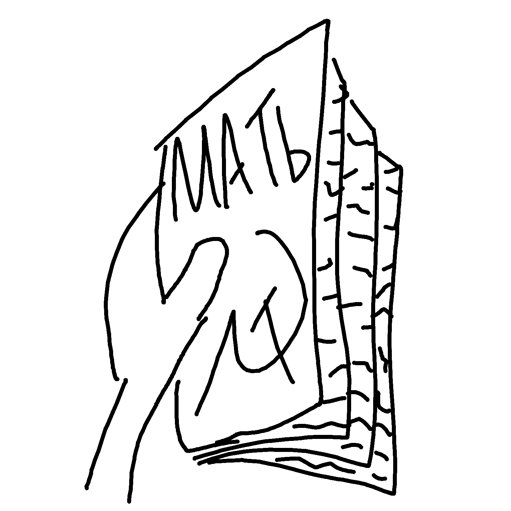
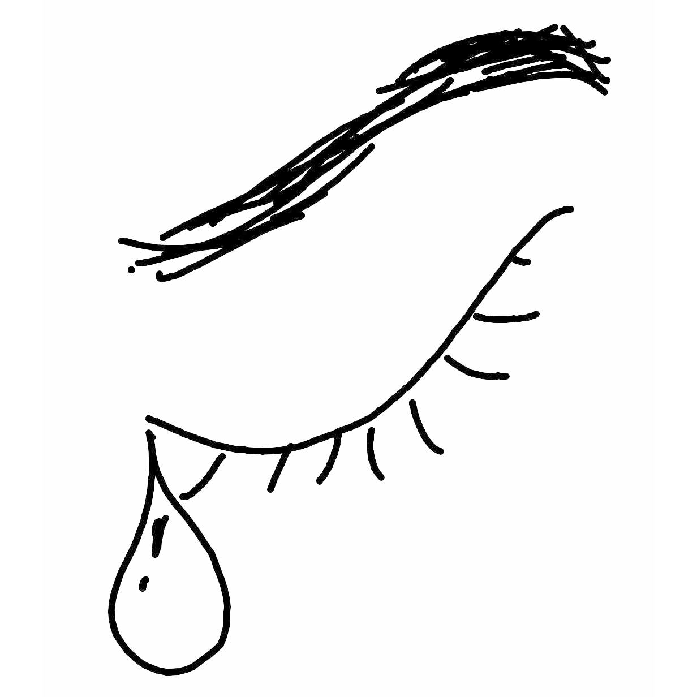

Today was surprisingly dark - literally pitch black when we stepped out; nevermind a sunrise, it looked like the sun had already fell.
And the bus ride was SOOOOO boring, my friends(kinda) just slept - what was I supposed to do, idk; but I can tell you what I did do: sit still and got judged.
Which reminds me, I wonder why it is that people feel so comfortable just staring - it's not just creepy men or whatever, girls my age fully look me up and down tutting.
Once I actually got to College, things got worse tho - cos my new friends basically just ignored me the whole time; I can never tell where I am with them: are we besties, or am I a third wheel?
And though I got a laugh from Nick's "Rizzmas Tree", I found Khadija's work as stressful as ever - I've been left with an absolute mountain to do for tomorrow but the motivations not there...
...Especially cos I'm waiting on over 7GBs of Screen Recording to download - it's not like they should be that big, but Mac Screen Recording is really high res and stuff, so pointlessly big.
All about College is a little unclear though because it was like 11 hours ago - so I can't clearly say what exactly was what, what was intentional - and what was not.
I read on the train again today - another thing to worry about: that I won't finish my book before I need to for the podcast on it for Nick. It is a good book though, really truly!
Able to get the train nice and early, I got home before 1 o' clock today; but I wasted like an hour laying in bed, because I couldn't face the work (which I still haven't finished as of 22:46).
I think in life I have one last hope, she's called Michelle - she's where I know to turn, she's where I am merely me: I surrender to crying for her most, I surrender myself to a lifetime of tears for love.
And I remind myself of what I first said for another, but for Michelle what I know is true:
And that's we are, and I know so as I hear her now in floods of her own.
I love you, dear Michelle; and I promise to write again soon! With all the love I can give and more, your Violet~